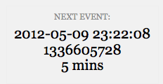

There's a Function for That: Doing More for Less With Core Functions
Zack Tollman, 10up LLC
@tollmanz
10up.com
Zack Tollman, 10up LLC
@tollmanz
10up.com
Propaganda
Functions
Use Core Functions
I need a function that will help me select the initial option for a select tag.
Add "selected" attribute to an option tag
Aaron Campbell - Twitter Widget Pro
<select name="get_field_name( 'items' ); ?>">
<?php
for ( $i = 1; $i <= 20; ++$i ) {
echo "<option value='$i' ";
echo selected( $instance['items'], $i, false );
echo ">$i</option>";
}
?>
</select>
Gee...I would love a function that could tell me tell me what hook is currently running.
Determine the currently running filter within a callback function
public function add_html( $string, $format ) {
switch ( current_filter() ) {
case 'get_the_date':
case 'get_comment_date':
$format = get_option( 'date_format' );
break;
case 'get_post_time':
case 'get_comment_time':
$format = get_option( 'time_format' );
break;
default;
return $string;
}
}
Michael Fields - Taxonomy Images
function taxim_get_terms( $default, $args = array() ) {
$filter = 'taxim-get-terms';
if ( $filter !== current_filter() ) {
taxim_please_use_filter( __FUNCTION__, $filter );
}
}
current_action() also exists
How can I tell if a function is executing in the loop or not?
Determine if function is executing inside or outside of the loop
add_filter( 'the_content', 'soc_insert_socialize' );
add_filter( 'the_excerpt', 'soc_insert_socialize' );
function soc_insert_socialize( $content ) {
if ( in_the_loop() ) {
// Magic
}
return $content;
}
I want to output the difference between times that is easy for humans to read.
Zack Tollman/Helen Hou-Sandí - Debug Bar Cron
$time_next_cron = date( 'Y-m-d H:i:s', $unix_time_next_cron ); $human_time_next_cron = human_time_diff( $unix_time_next_cron ); echo '<h2 class="times"><span>'; echo '__( 'Next Event', 'zt-debug-bar-cron' ) . ':</span>'; echo $time_next_cron . '<br />'; echo $unix_time_next_cron . '<br />'; echo $human_time_next_cron . '</h2>';
Wouldn't it be cool to simply append a list of query variables to a URL?
Append query variables and values to a URL
Pippin Williamson - Easy Digital Downloads
function edd_get_download_url( $key, $email, $filekey, $download ) {
$params = array(
'download_key' => $key,
'email' => urlencode( $email ),
'file' => $filekey,
'download' => $download,
'expire' => strtotime( '+1 day', time() )
);
$download_url = add_query_arg( $params, home_url() );
return $download_url;
}
I want my theme to be able to intelligently load a template from a child theme before loading it from the parent theme.
Requires a template from either a child or parent theme's folder
Modern Tribe - The Events Calendar
public static function getTemplateHierarchy( $template ) {
$tribe_ecp = TribeEvents::instance();
if ( substr( $template, -4) != '.php' )
$template .= '.php';
$templates = array( 'events/' . $template );
if ( $theme_file = locate_template( $templates ) )
$file = $theme_file;
else
$file = $tribe_ecp->pluginPath . 'views/' . $template;
return apply_filters( 'tribe_events_template_' . $template, $file );
}
I want to include files only if my theme has support for a specific feature.
Requires a file if the theme supports a specified feature
Justin Tadlock - Theme Hybrid Framework
// In Parent
function extensions() {
/* Load the Cleaner Caption extension if supported. */
require_if_theme_supports(
'cleaner-caption',
trailingslashit( HYBRID_EXTENSIONS ) . 'cleaner-caption.php'
);
/* Load the Entry Views extension if supported. */
require_if_theme_supports(
'entry-views',
trailingslashit( HYBRID_EXTENSIONS ) . 'entry-views.php'
);
}
// In Child
add_theme_support( 'entry-views' );
Isn't there an easier way to get the ID of the current page's object.
Gets the ID for the current page's main object
function hh_cached_nav_menu( $args = array(), $prime = false ) {
if ( get_queried_object_id() )
$qoi = get_queried_object_id();
else
$qoi = 0;
$nav_menu_key = md5( serialize( $args ) . '-' . $qoi );
if ( ! $nav_menu = get_transient( $nav_menu_key ) ) {
ob_start();
wp_nav_menu( $args );
$nav_menu = ob_get_clean();
set_transient( $nav_menu_key, $nav_menu );
}
return $nav_menu;
}
Can't it be easier to provide a list of default arguments for a functions arguments?
Guarantees certain indices in a an array are set by providing default values
Otto - Simple Facebook Connect
function get_sfc_activity_feed($args) {
$args = wp_parse_args($args, array(
'header'=>'true',
'site'=>'',
'bordercolor'=>'000000',
'width'=>'260',
'height'=>'400',
'font'=>'lucida+grande',
'colorscheme'=>'light',
'recommendations'=>'false')
);
extract($args);
return "<fb:activity site='{$host}' {$path} width='{$width}' height='{$height}' header='{$header}' colorscheme='{$colorscheme}' font='{$font}' border_color='{$bordercolor}' recommendations='{$recommendations}'></fb:activity>";
}
I need a way to impress my friends.
Select a single index's value from a collection of similar objects/arrays
$posts = get_posts(); var_dump( $posts );
array
0 =>
object(stdClass)[81]
public 'ID' => int 801
public 'post_author' => string '1' (length=1)
public 'post_date' => string '2012-05-04 17:40:12' (length=19)
...
1 =>
object(stdClass)[82]
public 'ID' => int 797
public 'post_author' => string '2' (length=1)
public 'post_date' => string '2012-05-04 17:39:30' (length=19)
...
2 =>
object(stdClass)[83]
public 'ID' => int 784
public 'post_author' => string '1' (length=1)
public 'post_date' => string '2012-04-29 01:22:08' (length=19)
...
$posts = get_posts(); wp_list_pluck( $posts, 'ID' );
array 0 => int 801 1 => int 797 2 => int 784
public function get_related( $post_id, $extra_qv = array() ) {
$post_id = (array) $post_id;
$connected = $this->get_connected( $post_id, $extra_qv );
if ( !$connected )
return false;
if ( !$connected->have_posts() )
return $connected;
$connected_ids = wp_list_pluck( $connected->posts, 'ID' );
return $this->get_connected( $connected_ids, array(
'post__not_in' => $post_id,
) );
}
Use more Core functions
Read more Core
Zack Tollman
@tollmanz
tollmanz.com